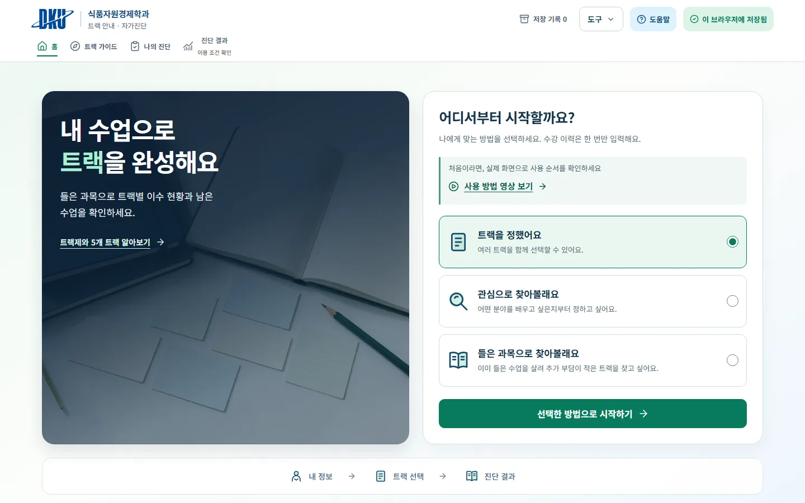
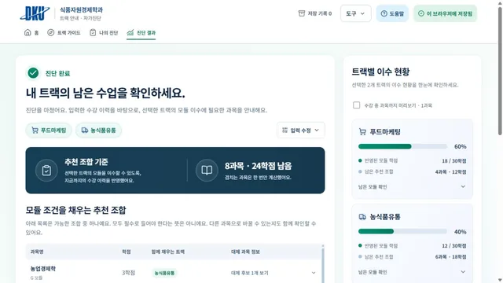
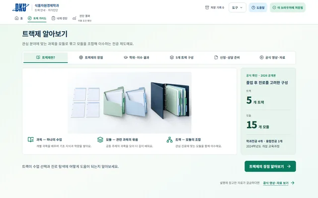
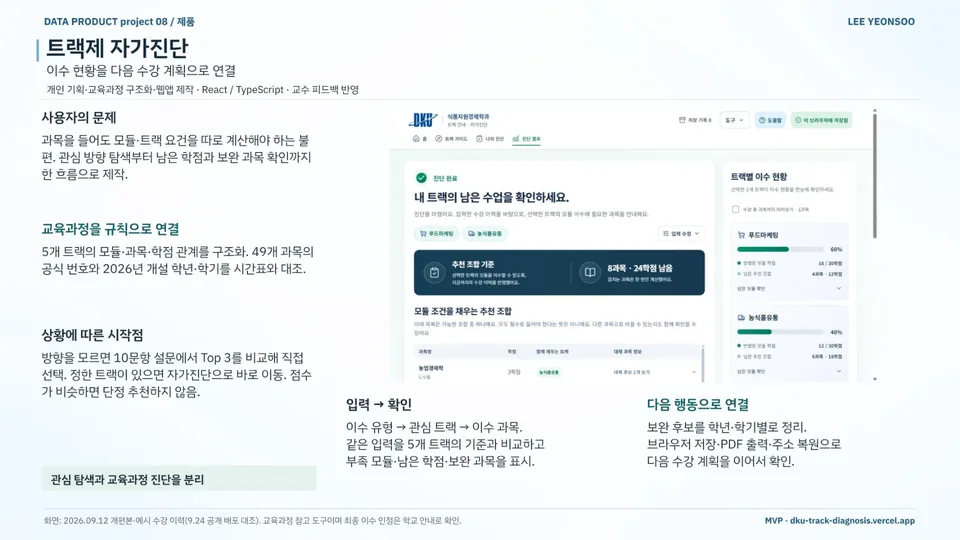
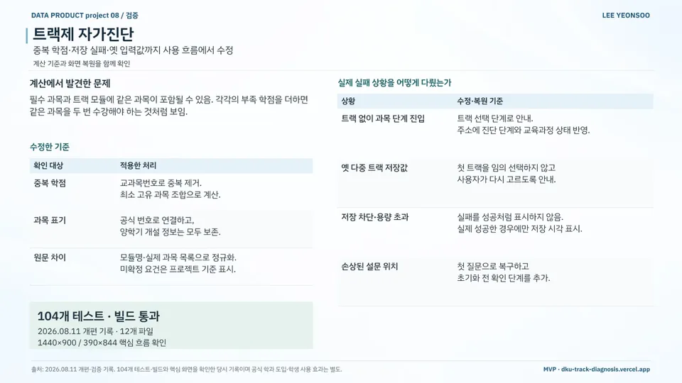

MVP 구현 / 교육
트랙제 자가진단
DKU Track Self-Diagnosis
식품자원경제학과 트랙제 이수 현황과 보완 과목을 보여 주는 수강 계획 웹앱
현재 상태개인 웹앱 공개 배포
- 기간
- 2026 (2026.08.11 개편·검증 → 08.25 UX 개편 → 09.12 개편본)
- 팀
- 개인
- 내 역할
- 개인 프로젝트 · 기획·교육과정 구조화·웹앱 제작
- 도구
- 수상
- —
내 기여문제 정의부터 교육과정 데이터 구조화, 계산 규칙 설계, React/TypeScript 구현, 테스트·배포까지 혼자 진행하고 교수 피드백을 반영했습니다.
사진·화면


크게 보기
크게 보기진단 결과: 남은 과목·학점과 트랙별 이수 현황출처dku-track-diagnosis.vercel.app (새 창) 
크게 보기트랙제 알아보기: 5개 트랙·15개 모듈 구조 안내출처dku-track-diagnosis.vercel.app (새 창)


발표 자료

크게 보기포트폴리오 슬라이드 23쪽 · 본문 내용을 한 장으로 정리한 슬라이드 
크게 보기포트폴리오 슬라이드 24쪽 · 본문 내용을 한 장으로 정리한 슬라이드


문제
과목을 들어도 모듈·트랙 요건은 학생이 따로 계산해야 했습니다. 관심 방향 탐색부터 남은 학점과 보완 과목 확인까지를 한 흐름으로 묶었습니다.
접근
- 5개 트랙의 모듈·학점 관계 구조화와 49개 과목의 공식 번호·2026년 개설 학년·학기 대조
- 미정인 학생은 10문항 설문의 Top 3에서 선택, 트랙을 정한 학생은 자가진단으로 이동
- 이수 유형·관심 트랙·이수 과목을 5개 트랙 요건과 비교해 부족 모듈·학점·보완 과목 표시
- 보완 후보를 학년·학기별로 정리하고 브라우저 저장·PDF 출력·주소 복원 제공
핵심 판단
필수 과목과 트랙 모듈의 중복을 교과목번호로 제거해 최소 고유 과목 조합 계산
설문 점수가 비슷한 트랙은 함께 제시하고 학생이 직접 선택
옛 다중 트랙 저장값은 첫 트랙을 임의로 고르지 않고 사용자가 다시 고르도록 안내
저장 차단·용량 초과를 성공처럼 표시하지 않고, 실제로 저장된 경우에만 저장 시각 표시
결과
- 구조화한 과목49개5개 트랙 · 공식 번호·개설 학기 대조
- 테스트·빌드104개 통과2026.08.11 개편
- 관심 탐색 설문10문항 → Top 3점수가 비슷하면 단정 추천 안 함
- 2026.08.11 개편: 테스트 104개·빌드 통과, 1440×900 / 390×844에서 핵심 흐름 점검
- 2026.08.25 UX 개편: 테스트 23개·Vite 프로덕션 빌드 통과
- Vercel 배포와 GitHub 저장소 공개
AI 활용
서비스에 AI 판정은 없고, 교육과정 규칙에 따라 계산합니다.
한계와 다음 단계
교육과정 참고용 개인 웹앱으로, 최종 이수·트랙 인정은 학과 공식 안내를 따릅니다. 학생 사용 효과는 아직 측정하지 않았습니다.